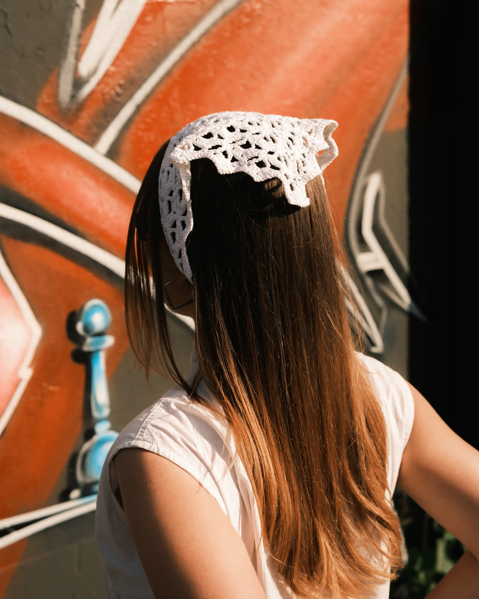
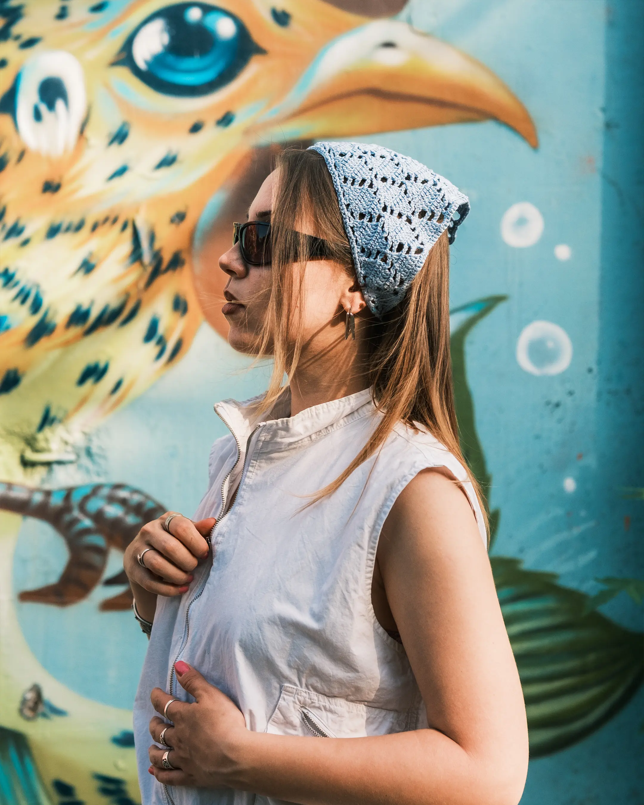
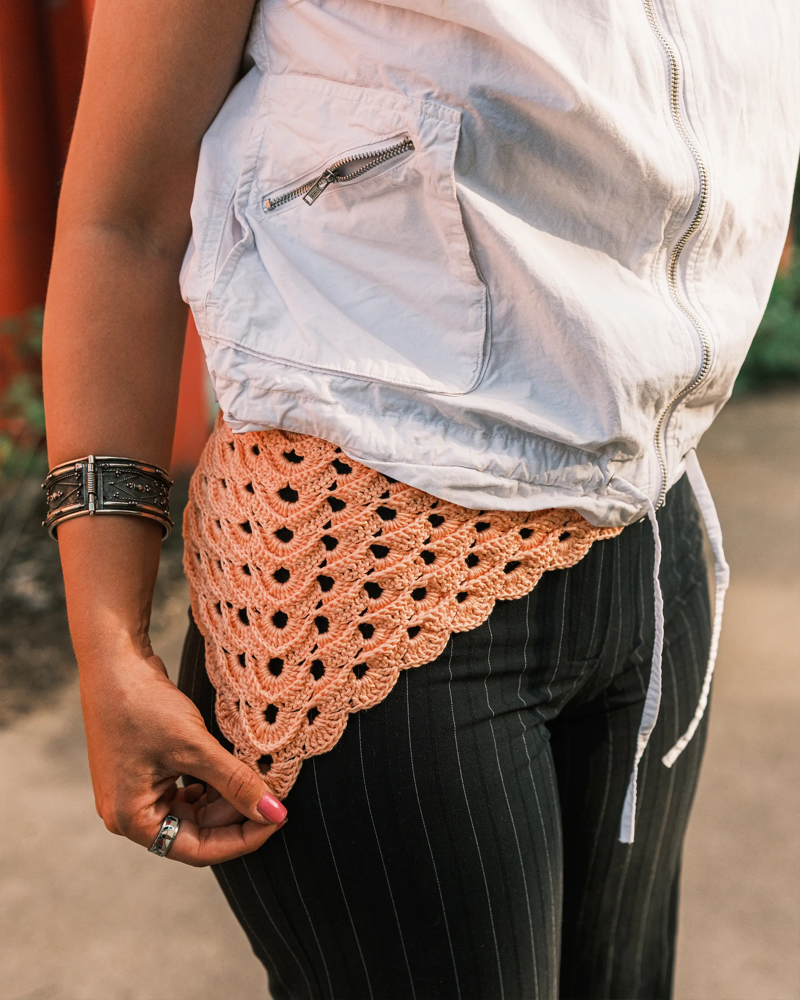
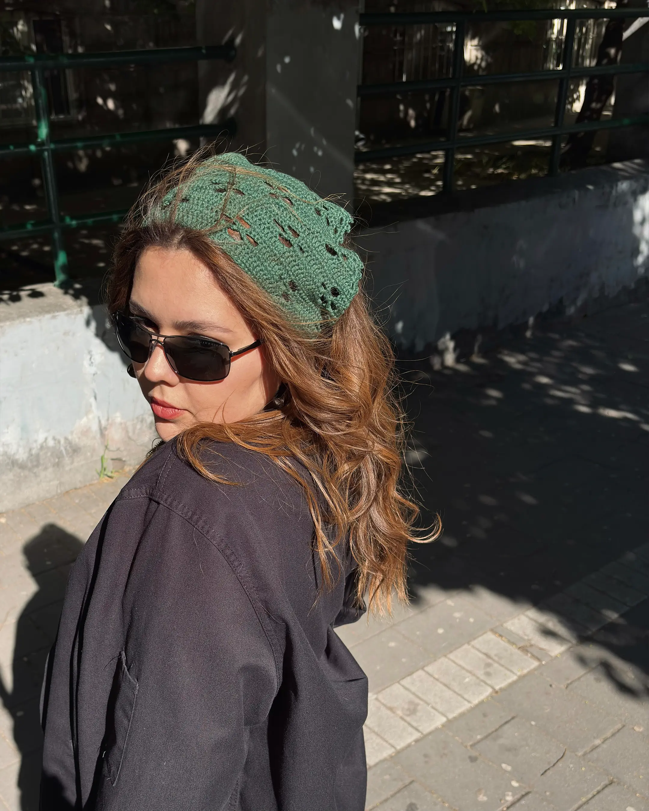
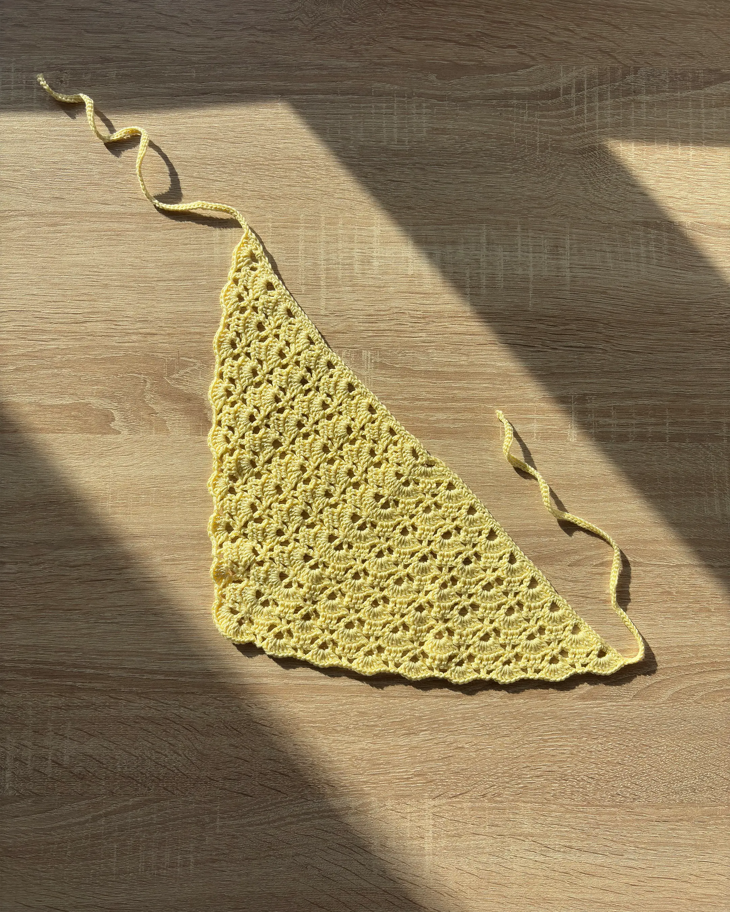
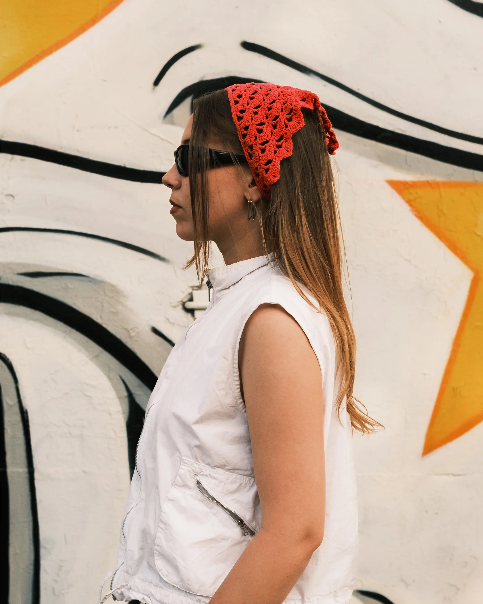
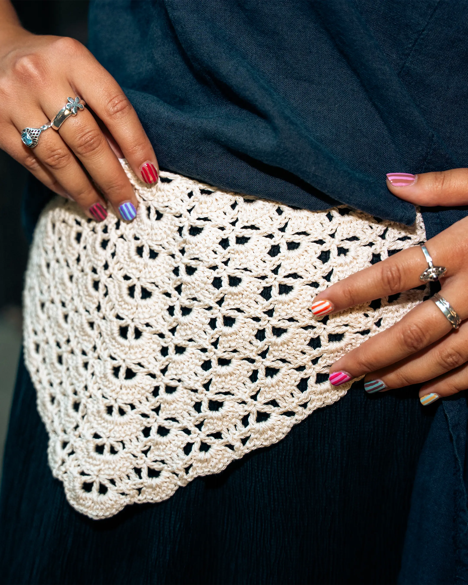
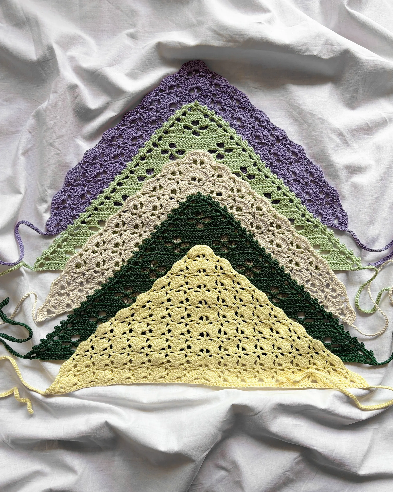
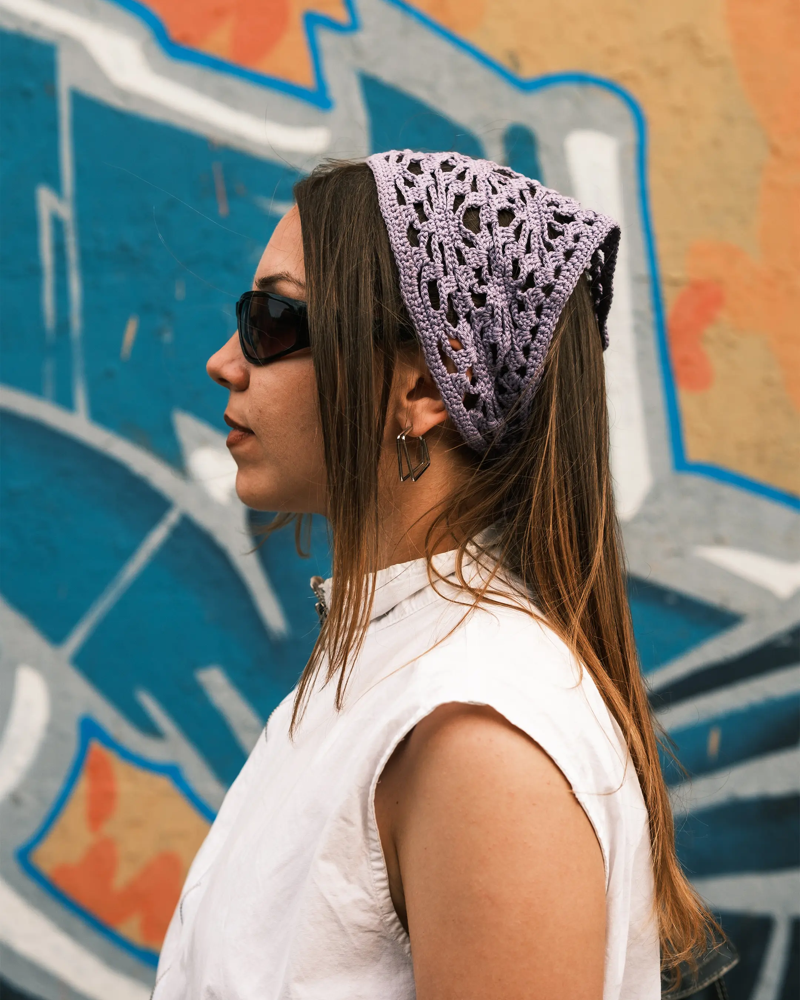

Ručno heklane bandane od 100% pamuka.
Odaberi model i boju kako bi napravila svoju kombinaciju.









Most photos by @ohneeeeee
Izaberi model
Izaberi boju
Dužina trakica
Izaberi model, boju i dužinu trakica
2.500 RSD
Klikom na dugme bićeš preusmerena na KROSH Instagram profil. Tvoja kombinacija će se kopirati, samo je nalepi u DM <3

Okvirni rok izrade je 7–14 dana, pošto svaku KROSH maramu ručno izrađujem po porudžbini.
Često će biti gotova i ranije, a vreme izrade može da varira u zavisnosti od broja porudžbina.
Maramu je najbolje prati ručno, u hladnoj ili mlakoj vodi (do 30°C), uz malu količinu blagog deterdženta. Peri je nežno, bez dugog potapanja i jakog uvijanja ili ceđenja.
Nakon pranja, maramu oblikuj i ostavi da se prirodno osuši položena na ravnoj površini, dalje od direktnog sunca i izvora toplote.
Po potrebi, može se prati i u mašini na delikatnom programu do 30°C, ali je ručno pranje najbolja opcija kako bi što duže zadržala svoj oblik.
Most photos by @ohneeeeee